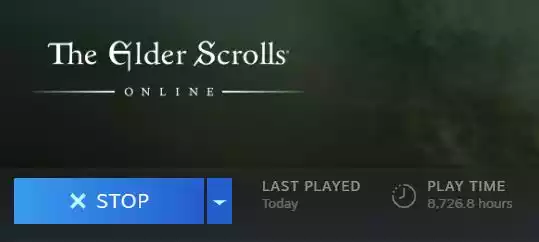
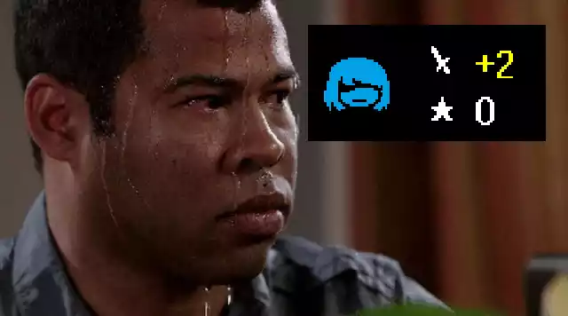

THE INVISIBLE DIFFICULTY SLIDER

the idea of a level up is so ubiquitous that it’s almost synonymous with games themselves. but over the past few years, i’ve come to develop a scorn for any kind of ‘power’ progression system. by that i mean, progression that makes the exact same actions more effective. this is typically done with leveling systems that increase stats, or objectively stronger equipment over time.
i believe that many games that utilize these systems are worse for it. they disrupt the balance and difficulty curve while undermining accomplishment, all to deliver on an aesthetic that clashes with the core forms of engagement that are often the focus of the work.
EMPTY ACCOMPLISHMENTS

i’ll start with the lesser of the two problems: power progression systems diminish the sense of accomplishment rather than enhance it. of course, this all hinges on the players' feelings, which are largely subjective. furthermore, i think i’m definitely in the minority on this front. if you find satisfaction in grinding to overcome a challenge, that’s a totally valid perspective. but personally, succeeding because of my character growing stronger rather than me getting better always feels like a hollow victory.
i think this mindset has stemmed in large part from playing competitive multiplayer games where power is intentionally kept constant and carefully balanced to highlight player skill. there’s very little disconnect between your results and your character. it’s unquestionably you that’s getting better.
i feel many progression systems obfuscate this feeling of improvement. i don’t feel accomplished when i defeat a difficult boss i was stuck on after grinding for a few hours; i feel like i gave up on solving the problem, but the game begrudgingly allowed me past anyways.
now, i’ve portrayed this scenario in a very black-and-white way. most games usually mix power progression and skill together, so it’s not like a power progression system means your skill isn’t also developing. but i take issue with the ambiguity this creates. did you really get better, or did the game just get easier?
THE BALANCE SLEDGEHAMMER

if you’re reading this, i assume you're pretty deep into the vidya games, so i’m not going to talk your ear off about flow states and difficulty curves. but basically… the game should get harder over time, but growth in the player’s power can throw that off. of course, it’s possible to make the challenge ramp up even more to compensate, but that massively complicates balancing and still runs the risk of people inadvertently ruining the difficulty for themselves. a power progression system is essentially the worst difficulty selection ever created: it’s largely opaque, difficult to modulate, and can wildly fluctuate unintentionally.
the solution to the player’s scaling power might seem simple. the designer should plan for the average player’s power level at any given point in the game and scale challenges accordingly. but the issue is that the designer can only account for just that, the average player. if they backtrack and fight more enemies or rush past a bunch of enemies or decide to grind or miss a powerful piece of equipment, all that careful planning goes out the window. you have to play in a very specific way to make the game balanced for yourself.
there’s also the issue of skill checks. bosses and the like often test the player’s knowledge or skill of a specific aspect of the game so that going forward, the designer can safely assume a certain baseline of understanding. thus, future challenges can elaborate on previous ones. but that all falls apart if a player grinds past a challenge without learning what they were supposed to. it’s just another way a player could ruin the enjoyment for themselves.
MY WAY GRIND WAY

i think the best argument in defense of this system is that it provides a means for players to lower the difficulty in a way that feels authentic and earned compared to a standard difficulty selection. i can definitely understand this and agree with it to an extent. however, i see this as more of a silver lining that’s vastly overshadowed by this system’s flaws.
the first of those flaws is rigidness. if a player overlevels themselves to defeat a particularly tough boss, they can’t easily lower the difficulty back down to where it should be afterwards. they might be stuck overpowered for the rest of the game. a conventional difficulty option would be far superior here because it gives players the flexibility to change things and make accommodations for specific parts rather than the whole game.
the second problem is ambiguity. if you grind up to 10 levels higher than you were expected to be, that might lower the difficulty to just the level that’s right for you. or it could make you so powerful that essentially all challenge is removed; or it could still not be easy enough; or it could be just goldilocks but only for that part of the game. the impact of your leveling on the overall experience is quite nebulous. again, a traditional difficulty system (while certainly not perfect) would be a lot better, that at least gives you the labels of "easy" or "hard" to work with.
ABNEGATION
i’ve been talking about balance and strategy and accomplishment, but i also want to address the flipside of that coin: abnegation. it’s essentially "play as pastime." it’s the appeal of playing a comforting game that doesn’t really require much of you just to pass some time and unwind. this aesthetic is where power progression systems and the grinding they often encourage really shine. it provides a nice, slow burn of a reward without requiring much moment to moment effort. games like clash of clans or world of warcraft use this to great effect.
however, this doesn’t mean that this is beneficial for every type of game. the ones that really annoy me the most in this respect are RPGs. they’re almost always trying to deliver on the aesthetics of challenge and narrative – both of which are severely undercut by this side focus on abnegation. challenge is completely antithetical to abnegation for obvious reason, and the narrative’s pacing is going to be ruined by vast swaths of time dedicated to abnegation that, by definition, can’t contain anything too substantial. there’s not really a way to make these aesthetics work well together.
that is the ultimate point i’m trying to make. power progression systems aren’t inherently bad, but they are terribly misutilized a huge portion of the time in so many games. it's why i have such mixed feelings on games i'd otherwise love wholeheartedly.
CONCLUSION
while it’s perhaps not exactly fair, i’ve personally developed a disdain for any kind of power progression in games. it’s why i kept each level in teralite completely self-contained, with absolutely nothing carrying between them other than your own skill. it’s also why i’m making a mod for omori that removes stat gains from leveling and rebalances the game around a (mostly) static power level.
that mod ties in with the last thing i want to talk about. if power progression systems aren’t a good fit for RPGs, then what is? well, progression systems are invaluable tools, undoubtedly. they’re great for gradually introducing the game's complexity over time instead of dumping it all at the start, and for showing character growth through gameplay. removing them completely isn’t a good solution. instead, i think the player should get more options over the course of the game rather than more raw power; all of the benefits, none of the drawbacks. that is the hypothesis i aim to prove with my omori mod.
there are some potential pitfalls to this system i’m proposing. will this make leveling and finding equipment feel unrewarding? will players just not use the new skills and tactics they unlock if they aren’t explicitly more powerful than what they start with? where do you draw the line on what constitutes an increase in power – surely being stacked on consumable items will grant an advantage, right?
these are all things i’m trying my best to think up solutions to, but of course there’s always the possibility that it’s a catastrophic failure. either way, i’ll probably make a follow-up in a couple months after i finish the mod to reflect on it and the claims made here. but that’s all i have for now.
NonGMOTrash
january 21st, 2023
(last modified: march 2nd, 2023)